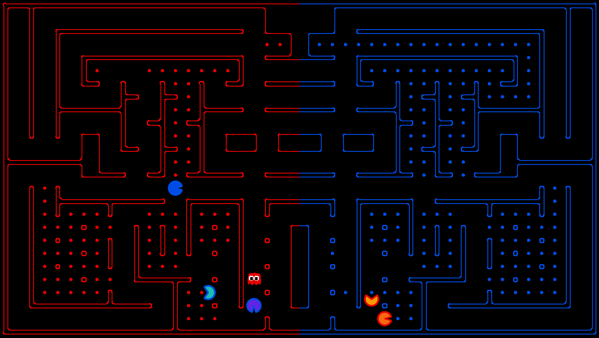

Onto enemy terrain.
Capture all their food!
Enough of defense,
Onto enemy terrain.
Capture all their food!
The course contest this semester involves a multi-player capture the flag variant of Pacman, where agents control both Pacman and ghosts in coordinated team-based strategies.
In a game of Pacture the Flag, your team will try to eat all of the food on the far side of the map, while defending the food on your home side. When on your side, you are a ghost: able to eat Pacman but not food. When in enemy territory, you are Pacman, eating food whilst avoiding enemy ghosts.
This version shares much in common with classic Pacman from projects 1 and 2, but also integrates motion tracking from project 5. It will be up to you to decide what material from the course you leverage to make your agent.
The code for this project contains the following files, available as a zip archive.
| Key files to read: | |
| capture.py | The main file that runs games locally. This file also describes the new capture the flag GameState type and rules. |
| pacclient.py | The main file that runs games over the network. |
| captureAgents.py | Some example agents for this variant of the game. |
| Supporting files: | |
| game.py | The logic behind how the Pacman world works. This file describes several supporting types like AgentState, Agent, Direction, and Grid. |
| util.py | Useful data structures for implementing search algorithms. |
| distanceCalculator.py | Computes shortest paths between all maze positions. |
| graphicsDisplay.py | Graphics for Pacman |
| graphicsUtils.py | Support for Pacman graphics |
| textDisplay.py | ASCII graphics for Pacman |
| keyboardAgents.py | Keyboard interfaces to control Pacman |
| layout.py | Code for reading layout files and storing their contents |
Academic Dishonesty: While we won't grade contests, we still expect you not to falsely represent your work. Please don't let us down. If you do, we will pursue the strongest consequences available to us.
Capturing: When a Pacman agent is eaten by an opposing ghost agent, it returns to its starting point. Ghosts can never be eaten.
Observations: Agents can only observe an opponent's configuration (position and direction) if they or their teammate is within 5 squares (Manhattan distance). In addition, an agent always gets a noisy distance reading for each agent on the board, which can be used to approximately locate unobserved opponents.
Winning: Games have a fixed length (number of agent moves). A game ends when either one team eats all of the opponents' dots or time runs out. If time runs out, then whichever team has eaten the most food wins. Points are only awarded for eating food.
Computation Time: In online play, each agent will have only 0.5 seconds to choose an action, or the server will choose one at random for them.
python capture.pyThe arrow keys control your character, which will change from ghost to Pacman when crossing the center line.
A wealth of options are available to you:
python capture.py --helpFor example, use the following command to put the first blue opponent on defense.
python capture.py -2 DefensiveReflexAgentThere are six slots for agents, where agents 1, 3 and 5 are always on the red team and 2, 4 and 6 on the blue team. See the section on designing agents for a description of the agents invoked here.
-1, -2, and -3:
python pacclient.py -1 DefensiveReflexAgentLook at the options with the
--help option. If you want to identify yourself to the server for stats tracking, you should supply a name and password. If the name you supply is new, an account will be created for you. If it is a name that is already used, you must supply the correct password or the server will not accept your connection.
python pacclient.py -U randomGuy -P notSoGood -1 RandomAgent -2 RandomAgent
Any agent that works in a local game should work equivalently in an online game. However, there is a real-time element to the game: you have a limited amount of time to choose your action at each step (0.5 seconds plus a little leeway). The server will enforce this time limit, and will choose a move for you if you don't supply one in time.
You can choose from several different game scenarios by changing the port option (default 7226). Here are the games available on the default server:
7225: -l contestCapture -k 4 -t 3000 (released 11/26) 7226: -l mediumCapture -k 4 -t 3000 (default) 7227: -l littleCapture -k 2 -t 1000 7228: -l officeCapture -k 4 -t 3000 7229: -l bloxCapture -k 4 -t 3000 7230: -l crowdedCapture -k 6 -t 3000 7231: -l jumboCapture -k 6 -t 5000
Interface: The GameState in capture.py should look familiar, but contains new methods like getRedFood, which gets a grid of food on the red side (note that the grid is the size of the board, but is only true for cells on the red side with food). Also, note that you can list a team's indices with getRedTeamIndices, or test membership with isOnRedTeam.
Finally, you can access the list of noisy distance observations via getAgentDistances. These distances are within 4 of the truth, and the noise is chosen uniformly at random from the range [-4, 4] (e.g., if the true distance is 6, then each of {2, 3, ..., 10} is chosen with probability 1/9).
As a convenience, subclassing the CaptureAgent class gives access to several more convenience methods, repeated below:
def getFood(self, gameState):
"Returns the food you're meant to eat."
def getFoodYouAreDefending(self, gameState):
"Returns the food you're meant to eat."
def getOpponents(self, gameState):
"Returns agent indices of your opponents."
def getTeam(self, gameState):
"Returns agent indices of your team."
def getScore(self, gameState):
"Returns how much you are beating the other team by."
def getMazeDistance(self, pos1, pos2):
"""
Returns the distance between two points; this is either the Manhattan
distance early in the game, or actual shortest path maze distances once
the computation is complete.
The distancer computes the shortest path between pairs of points in the
background, and starts using them as soon as they are ready.
"""
def getPreviousObservation(self):
def getCurrentObservation(self):
Baseline Agents: To jumpstart your agent design, we have provided you with two respectable baseline agents. The OffensiveReflexAgent moves toward food on the opposing side and tries to maximize score. The DefensiveReflexAgent stays on its own side and tries to chase down invaders.
At the heart of both reflex agents is the computation of distances between locations in the maze. We provide code in distanceCalculator.py to supply shortest path maze distances as soon as they can be computed, but to supply Manhattan distances until then. This approach demonstrates some of the techniques you might want to use when designing agents under time constraints (sharing information, computing in parallel). However, this is neither the only nor the best way to solve the maze distance problem.
Rather than using the distance signal (like sonar.py), the provided DefensiveReflexAgent locates opponents by watching for disappearing food and moving toward it until an opponent is sighted. Such an agent can easily be tricked.
Restrictions: You are free to design any agent you want, and you need not use any of the code we have provided. Because the tournament will be run using the online architecture, you can run your agent from your machine using any resources or code you want; you can even write code in different programming languages if you so desire. Change pacclient.py at your own risk, though, because you don't want to break the network functionality.
contestCapture.lay , a 2-on-2 layout with varied terrain that will be released on Monday 11/26. The contest will consist of two events, a qualifying round and a single-elimination tournament.
Qualifying: To qualify for the tournament, you must play at least 5 games against our agents on contestCapture.lay (posted 11/27). This is meant to test that (a) you have improved upon the provided agents, and (b) your agent code is compatible with the online servers. Qualification games can be initiated with the following command:
python pacclient.py -p 7225 -U [your-email-address] -P [your-password]Within 24 hours of qualifying, you will receive an email notifying you that you are officially part of the tournament. You will then respond by indicating who else is on your team. So, please provide a working email address as your user name. The qualifying server will close on Monday 12/3 at 11:59 pm.
Tournament: On Wednesday 12/5 at 6pm we will run the final tournament in Soda Hall room 275. When it is your turn to play, you can run your agents from an EECS machine in Soda 275 or your own machine. Everyone is invited to the tournament. Teams who cannot attend will still be able to compete; please email the course staff if this is the case.
Prizes: The top three teams will receive awards in class on Thursday 12/6, including shiny medals and extra credit points.
If at least 25% of the class participates in the contest by qualifying for the tournament, then all prizes will be doubled. Note that 1% overall is a lot: it is equivalent to 2.5% on the final.
python pacclient.py -1 RandomAgent -g MyCoolGameWhich will pair you only with the next player who requests "MyCoolGame"
This being an inherently social feature, the CSUA has set up an IRC channel for chatting about the project. It can be reached at:
Server: irc.csua.berkeley.edu Channel: #cs188Or can be accessed by web interface here
Once you have installed PyGame, you can run either the networked or local game using the improved graphics.
python capture.py -1 RandomAgent -GThe
KeyboardAgent will not work with the PyGame graphics because it is tied to the Tk libraries used for the old graphics. Instead, there is a new keyboard agent compatible with the new graphics:
python capture.py -1 PygameAgent -G<-->

Have fun! Please bring our attention to any problems you discover.